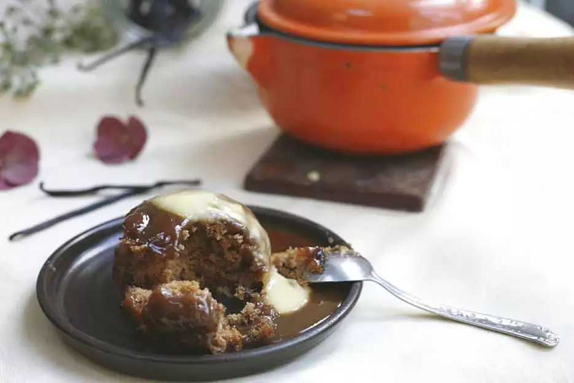

Sticky Toffee Pudding

Description
My easy recipe for sticky toffee pudding is quick and
so tasty! I just used the ingredients that I had in my
fridge and cupboards, without going to the effort of
going down the shops to get any special ingredients!
Best served straight from the oven with vanilla ice
cream on the side.
Ingredients
Cakes
- 1 Cup Hot Tea
- 0.5 Cup Raisins
- 1 Tablespoon Milk
- 6 Tablespoons Unsalted Butter
- 0.5 Cup White Sugar
- 0.5 Cup Brown Sugar
- 2 Large Eggs
- 1.5 Cup Self-Raising Flour
- 0.5 Teaspoon Vanilla Extract
- 0.5 Teaspoon Ground Cinnamon
- 1 Teaspoon Baking Soda
Toffee Topping
- 0.5 Cup Light Brown Sugar
- 2 Teaspoons Margarine
- 2 Tablespoons Golden Syrup
Steps
- Preheat the oven to 355 degrees F (180 degrees C).
Grease a baking dish.
- Combine hot black tea and raisins in a bowl; let
stand for 5 minutes.
- Drain raisins and transfer to a food processor.
Add milk and blend to combine.
- Beat butter, sugar, and brown sugar in a bowl. Whisk
in eggs. Add flour, vanilla, and cinnamon; mix to
combine. Stir in blended raisins and baking soda,
then pour into the prepared dish.
- Bake in the preheated oven until a skewer inserted
near the center comes out clean, about 35
minutes.
- While the pudding is cooking, combine brown sugar,
margarine, and golden syrup for topping in a
nonstick saucepan over medium-low heat. Cook and
stir until the sauce brims over with foamy bubbles.
Turn off the heat, but continue to stir until the
bubbles go down.
- Remove the pudding from the oven. Pour the toffee
topping over the warm pudding to ensure even
spreading. Serve hot.
Nutritional Facts
Per Serving: 465 calories; protein 5.7g;
carbohydrates 80.3g; fat 14.9g; cholesterol 92.7mg;
sodium 616.9mg.
Return To Main